← 返回阅读库 · 原论文目录
论文讲解阅读文档 · 多模态语言模型 · v043
LaFTer: Label-Free Tuning of Zero-shot Classifier using Language and Unlabeled Image Collections
视频时长 00:06:51；讲解文字 3,403 字符；提取讲解画面 14 张。按视频原顺序阅读，每段文字保留时间戳。
文字来自整段视频的自动语音转写，按自然停顿分段，并与 PPT / 论文页面 / 演示画面对齐。未将讲解压缩为摘要；术语、数字和口述公式请结合画面及原论文核对。 阅读稿已校正规范部分明确术语误识别；原始逐字稿和每处修改记录另行保留。
讲解画面为源视频截图（640×360），不是可编辑 PPT 文件。全片按每秒 2 帧扫描内容变化，逐步展开页保留；连续动画保留代表画面。清晰度受源视频限制。
下载完整资料包 · 含离线 HTML、PDF、Word、全部 PPT 画面和字幕。
原论文与材料
LaFTer: Label-Free Tuning of Zero-shot Classifier using Language and Unlabeled Image Collections · 下载完整 PDF（16 页）
按时间阅读
00:00:00–00:00:24 · 画面 001
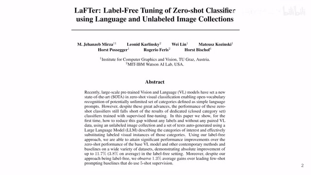
00:00:00–00:00:24 · 画面 001大家好,今天我们来快速说一篇论文 LaFTer: Label-Free Tuning of Zero-Shot Classifier Using Language and Unlabeled Image Collections 这篇是做 Zero-Shot Learning 但是它用了 Language 来帮助我们去在已经有的 Clip 的模型中去发掘它做 Zero-Shot 的潜力我们直接来看本文
00:00:24–00:00:25 · 画面 002
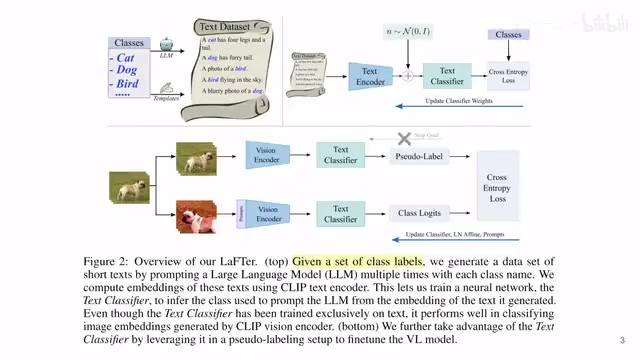
00:00:24–00:00:25 · 画面 00200:00:25–00:00:38 · 画面 003
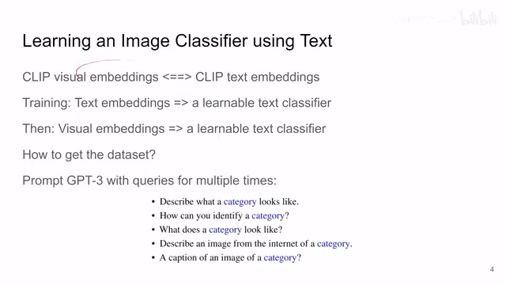
00:00:25–00:00:38 · 画面 003依赖于 Clip 里面 Visual Embedding 和 Text Embedding 的相似性，我们通过从 Text Embedding 训练一个 Text Classifier，进而让它很快速的迁移到 Visual Embedding 上，让 Text Classifier 能对 Visual Embedding 做分类，最终获得我们想要的 Text，其实就是我们最终的想要的图片的分类，那么在这个思路的基础上，我们只需要把 Text Classifier 训练一下
00:00:38–00:00:41 · 画面 004
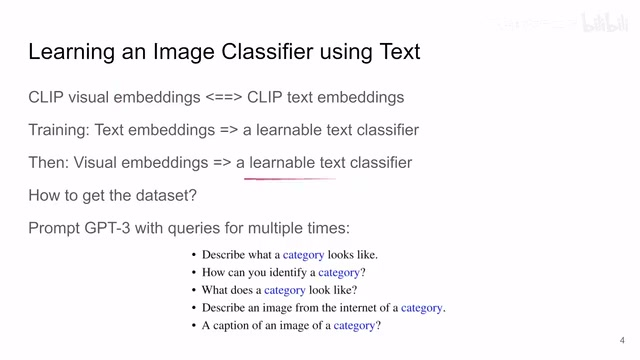
00:00:38–00:00:41 · 画面 00400:00:41–00:01:51 · 画面 005
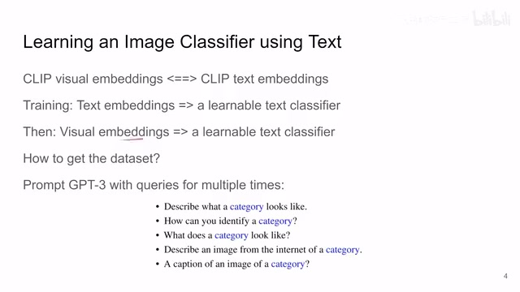
00:00:41–00:01:51 · 画面 005给它一个好的初始化，这样子呢，我们的迁移的过程呢会变得非常流畅，那我们应该怎么样采集样本呢，你想这个 Text Classifier 里面是什么呢，它就是把一个句子的 embedding 最后映射到某一个这个数据集中的某一个类里面，那么这个样本的获得呢就非常取巧，这里呢作者用这个 GPT-3 让它呢去生成一些对我们这个类别的东西的描述把这个描述出来的句子送到我们的这个 CLIP 的这个 text encoder 里面，这样子呢你就能拿到一个 text embedding，你多重复的不断的向这个 GPT-3 提问，用不同的这个 prompt 的模板给它提问，能达到不同的回答，那么拿到不同的回答之后呢你都提取这个 text embedding，这样子呢你就建立了一个从 text embedding 到具体的某一个类的这么一个映射，你有了这种映射呢你就可以拿它来训练一个 classifier
那么在这里呢，本文作者的 classifier 呢这个 text classifier 呢就是一个线性层，一个全连接层，非常简单的一个结构，那么他的这个 text embedding 呢作者呢是首先做了这个 L2 normalization，然后呢加上一个高斯噪声，作为一个类似于 data augmentation 的这样一个这样一个作用，然后呢送到我们这个 text classifier 里面和我们的真正的这个 C，也就是说我想要的这个图像的这个类具体的类别上
00:01:51–00:02:35 · 画面 006
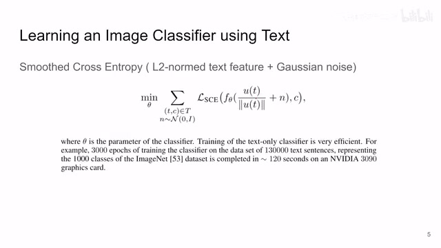
00:01:51–00:02:35 · 画面 006然后他们呢做这个 smoothed cross entropy 这样训练就可以了，那么可以看到呢，因为我们的这个 Classifier 它的结构非常简单，同时呢因为我们是训练的文本，它的数据量比这个图像要小很多，所以这个训练起来呢是非常快的，两分钟呢在 3090 上就训练好了，把 Clip 的 text embedding 能够映射到我们具体的图像的某一个类，那么然后下面要做的呢就是把这个 visual embedding 映射到我们图像的具体的类，最终能做到这么一个分类的任务嘛
00:02:35–00:04:35 · 画面 007
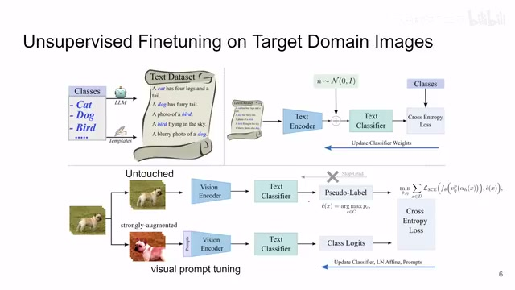
00:02:35–00:04:35 · 画面 007那么拿到这个 text classifier 之后呢，我们还是说因为这个 clip 它的这个 visual embedding 和 text embedding 最后在一个这个 latent space 里面，它们呢我们假设就直接用这样子呢，你一张图片进来送到这个 vision encoder 里面它就能得到这个 visual embedding，直接送到这个 text classifier 里面，这里呢作者用它来生成一个 pseudo-label，也就是说我根据我之前训练好了这个 text classifier 就初始的做一下这个分类
那么然后呢，在另一个分支，它对这个原始的图像做非常强的这个图像的增强，然后呢，用为这个 Visual Prompt Tuning，也就是在这个 VIT 前面加几个 Learnable 的 Token 这样的形式呢，一起和这个图像和这个 Prompt 送到这个 Vision Encoder 里面，拿到 Embedding，送到我们的这个 Text Classifier 里面，然后呢，就能够复杂出一个分类的结果那么在这里，监督信号从哪里来呢？和我们之前介绍了很多的 self-supervised learning 的方法一样，contrastive learning 的方法一样，因为我们知道这两张图像这两个 branch 的图像，它们都是来自于同一张图像，它们的语义信息应该是相似的，所以经过你这个 text classifier 训练出来图像的 class 图像的类别，它们两个应该是相同的
也就相当于你用 pseudo-label 去监督你整个这一周的训练，那么当然使用的 loss 竟然是一个 image classification 竟然是一个图像分类问题还是用这个 smoothed cross entropy，你把这个 pseudo-label 作为 ground truth，那么下面这一条呢，你就把它们全部训练起来就好了，那么这里呢，就是本文如何利用前面训好的这个 text classifier 非常机智的方法构造一个数据集，然后训练这个 text classifier，用它呢，再去整个的去训练我们的这个 vision encoder 去训练我们这个 text classifier，那么当然在第二阶段的这个训练过程中呢，有一些细节我们还是要注意一下
00:04:35–00:05:29 · 画面 008
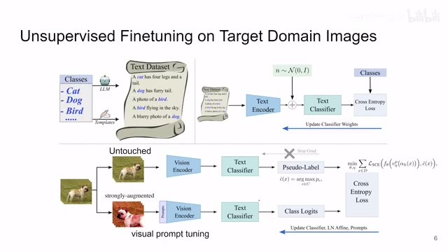
00:04:35–00:05:29 · 画面 008首先就是我们的整个的这个结构就是照着这个 SimSiam 以来的，所以呢，这两个分支的 Vision Encoder 它们的权重是相同的，或者说你在实际的操作中你只维持一个 Vision Encoder 就可以了，包括这个 Text Encoder 也是，然后第二点呢，注意这里作者用的是这个 Visual Prompt Tuning 这样子呢，你需要训练的参数就大大的减小了，但是呢，你这个 Vision Encoder 也不是完全不训练的这里呢，作者说他把这个 Vision Encoder 里面的这个 Layer Normalization 里面的这个参数，比如说就是他的 Shift 还有他的这个 Scale 这两个参数，他是训练这个东西，这就避免了把所有的参数都拉到我们的显卡里面去计算，这就避免了去 fine-tune 很多的参数，那当然你像这个 Text Classifier 还有我们的这个 Prompt 就是新加的这个 Prompt 就是前面加的这些 Prompt Token 这些呢，都是需要学习的参数
00:05:29–00:05:41 · 画面 009
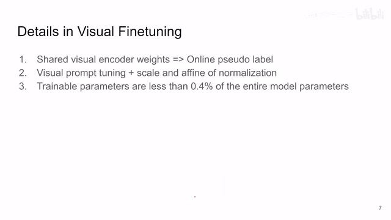
00:05:29–00:05:41 · 画面 009那作者也说了，经过我这一通操作，特别是这个 Visual Prompt Tuning 用了这个技术之后呢，我需要训练的参数呢，只占了整个模型参数的这个 0.4%只占了非常小的一部分，那么你就像做 SimSiam 一样做对吧，你不断的训练你的 Vision Encoder，不断训练你的模型，同时你的 pseudo-label 呢也跟着改进，那么经过你不断训练，最终你就可以把这个图像映射到一个具体的分类上
00:05:41–00:06:17 · 画面 010
00:05:41–00:06:17 · 画面 010那么你可以看到，本文的核心就是利用这个 Text Embedding 和这个 Visual Embedding 它们两个相似性，然后用 GPT 这种强大的工具有很多先验知识的工具根据这个模板来生成我们的这些文字样本，通过这个文字样本来先把这个 Text Classifier 训练好，然后再去处理这个 Visual Embedding，可以说是一个水到渠成的过程
00:06:17–00:06:37 · 画面 011
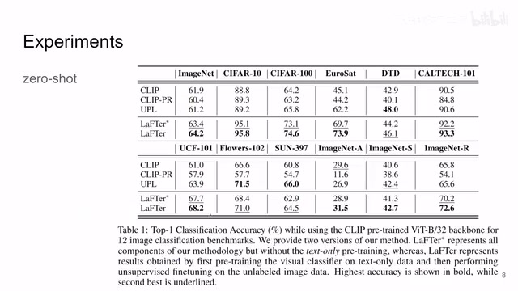
00:06:17–00:06:37 · 画面 011那么下面呢，我们直接来看作者汇报的结果。这里呢，作者汇报了 12 个不同的这个数据集。那么同时呢，你看到带信号的这个版本，这个版本呢，是去掉了前面这个 text pretraining 一切是这个左脚踩右脚按 SimSiam 那样子的，通过自监督的方法把整个这个 classification 的任务做出来的。那么还是作者在他的原文中呢，汇报了更多的 ablation，感兴趣的朋友呢，非常推荐你到原文查看。
00:06:37–00:06:49 · 画面 012
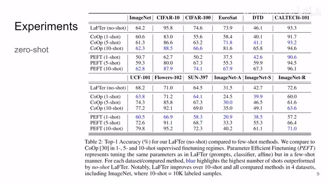
00:06:37–00:06:49 · 画面 012好的，那么以上就是我对这个文章的一个快速的整理。那么感谢您的收看，再见。
00:06:49–00:06:50 · 画面 013
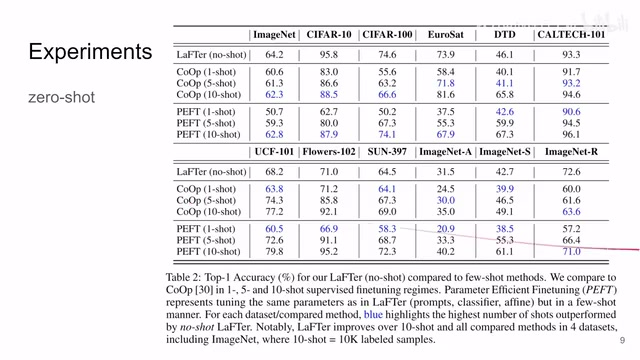
00:06:49–00:06:50 · 画面 01300:06:50–00:06:51 · 画面 014
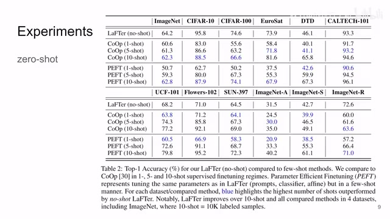
00:06:50–00:06:51 · 画面 014转写与来源说明 · 0 个自动复核提示
保留 17 个原始语音片段，0 个片段触发自动复核提示。提示仅用于定位可能的术语、重复或识别问题，不等于已确认错误。
讲解画面为源视频截图（640×360），不是可编辑 PPT 文件。全片按每秒 2 帧扫描内容变化，逐步展开页保留；连续动画保留代表画面。清晰度受源视频限制。
原视频：paper/合集_2026-10-16_多模态语言模型/[论文速览]LaFTer Label-Free Tuning of Zero-shot Classifier...[2305.18287].mp4
SHA-256：4146c415e12219a4f6a7e5153940a09de29ad73885247929f9dd2073bcf3567b
全文按视频语音与画面制作。原论文可从上方链接下载；完整资料包保留全文、原始逐字稿、字幕和校对记录。